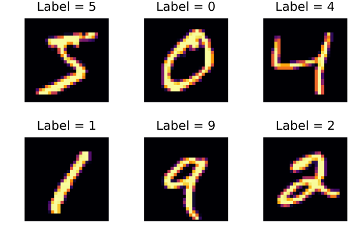
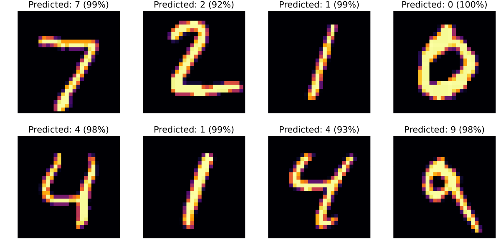
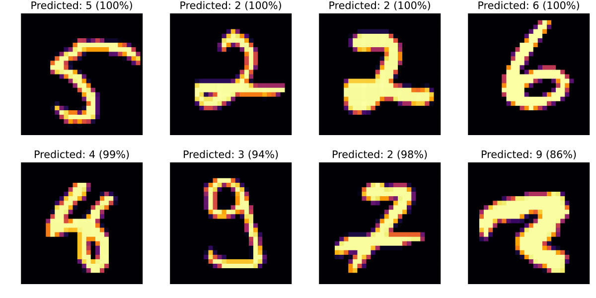
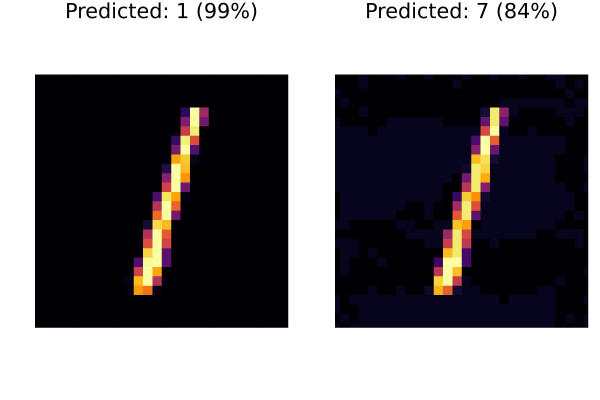

Adversarial machine learning with Flux.jl
The purpose of this tutorial is to explain how to embed a neural network model from Flux.jl into JuMP.
Required packages
This tutorial requires the following packages
using JuMPimport ExaModelsimport Fluximport Ipoptimport MathOptAIimport MLDatasetsimport NLPModelsIpoptimport PlotsData
This tutorial uses images from the MNIST dataset.
We load the predefined train and test splits:
train_data = MLDatasets.MNIST(; split = :train)dataset MNIST:
metadata => Dict{String, Any} with 3 entries
split => :train
features => 28×28×60000 Array{Float32, 3}
targets => 60000-element Vector{Int64}test_data = MLDatasets.MNIST(; split = :test)dataset MNIST:
metadata => Dict{String, Any} with 3 entries
split => :test
features => 28×28×10000 Array{Float32, 3}
targets => 10000-element Vector{Int64}Since the data are images, it is helpful to plot them. (This requires a transpose and reversing the rows to get the orientation correct.)
function plot_image(x::Matrix; kwargs...) return Plots.heatmap( x'[size(x, 1):-1:1, :]; xlims = (1, size(x, 2)), ylims = (1, size(x, 1)), aspect_ratio = true, legend = false, xaxis = false, yaxis = false, kwargs..., )endfunction plot_image(instance::NamedTuple) return plot_image(instance.features; title = "Label = $(instance.targets)")endPlots.plot([plot_image(train_data[i]) for i in 1:6]...; layout = (2, 3))
Training
We use a simple neural network with one hidden layer and a sigmoid activation function. (There are better performing networks; try experimenting.)
predictor = Flux.Chain( Flux.Dense(28^2 => 32, Flux.sigmoid), Flux.Dense(32 => 10), Flux.softmax,)Chain(
Dense(784 => 32, σ), # 25_120 parameters
Dense(32 => 10), # 330 parameters
NNlib.softmax,
) # Total: 4 arrays, 25_450 parameters, 99.617 KiB.Here is a function to load our data into the format that predictor expects:
function data_loader(data; batchsize, shuffle = false) x = reshape(data.features, 28^2, :) y = Flux.onehotbatch(data.targets, 0:9) return Flux.DataLoader((x, y); batchsize, shuffle)enddata_loader (generic function with 1 method)and here is a function to score the percentage of correct labels, where we assign a label by choosing the label of the highest softmax in the final layer.
function score_model(predictor, data) x, y = only(data_loader(data; batchsize = length(data))) y_hat = predictor(x) is_correct = Flux.onecold(y) .== Flux.onecold(y_hat) p = round(100 * sum(is_correct) / length(is_correct); digits = 2) println("Accuracy = $p %") returnendscore_model (generic function with 1 method)The accuracy of our model is only around 10% before training:
score_model(predictor, train_data)score_model(predictor, test_data)Accuracy = 10.22 %
Accuracy = 10.1 %Let's improve that by training our model.
It is not the purpose of this tutorial to explain how Flux works; see the documentation at https://fluxml.ai for more details. Changing the number of epochs or the learning rate can improve the loss.
begin train_loader = data_loader(train_data; batchsize = 256, shuffle = true) optimizer_state = Flux.setup(Flux.Adam(3e-4), predictor) for epoch in 1:30 loss = 0.0 for (x, y) in train_loader loss_batch, gradient = Flux.withgradient(predictor) do model return Flux.crossentropy(model(x), y) end Flux.update!(optimizer_state, predictor, only(gradient)) loss += loss_batch end loss = round(loss / length(train_loader); digits = 4) print("Epoch $epoch: loss = $loss\t") score_model(predictor, test_data) endendEpoch 1: loss = 1.9034 Accuracy = 76.1 %
Epoch 2: loss = 1.2172 Accuracy = 84.43 %
Epoch 3: loss = 0.889 Accuracy = 87.18 %
Epoch 4: loss = 0.7016 Accuracy = 88.5 %
Epoch 5: loss = 0.5846 Accuracy = 89.3 %
Epoch 6: loss = 0.5071 Accuracy = 89.98 %
Epoch 7: loss = 0.4531 Accuracy = 90.56 %
Epoch 8: loss = 0.4135 Accuracy = 90.81 %
Epoch 9: loss = 0.3828 Accuracy = 91.23 %
Epoch 10: loss = 0.3579 Accuracy = 91.44 %
Epoch 11: loss = 0.3376 Accuracy = 91.59 %
Epoch 12: loss = 0.321 Accuracy = 91.92 %
Epoch 13: loss = 0.3064 Accuracy = 92.18 %
Epoch 14: loss = 0.2938 Accuracy = 92.24 %
Epoch 15: loss = 0.2825 Accuracy = 92.44 %
Epoch 16: loss = 0.2728 Accuracy = 92.56 %
Epoch 17: loss = 0.2637 Accuracy = 92.73 %
Epoch 18: loss = 0.2554 Accuracy = 92.86 %
Epoch 19: loss = 0.2481 Accuracy = 92.98 %
Epoch 20: loss = 0.2412 Accuracy = 93.06 %
Epoch 21: loss = 0.2348 Accuracy = 93.2 %
Epoch 22: loss = 0.2288 Accuracy = 93.38 %
Epoch 23: loss = 0.2231 Accuracy = 93.48 %
Epoch 24: loss = 0.2181 Accuracy = 93.6 %
Epoch 25: loss = 0.2132 Accuracy = 93.79 %
Epoch 26: loss = 0.209 Accuracy = 93.81 %
Epoch 27: loss = 0.2042 Accuracy = 94.01 %
Epoch 28: loss = 0.2002 Accuracy = 94.04 %
Epoch 29: loss = 0.1966 Accuracy = 94.12 %
Epoch 30: loss = 0.1929 Accuracy = 94.12 %Here are the first eight predictions of the test data:
function plot_image(predictor, x::Matrix) score, index = findmax(predictor(vec(x))) title = "Predicted: $(index - 1) ($(round(Int, 100 * score))%)" return plot_image(x; title)endplots = [plot_image(predictor, test_data[i].features) for i in 1:8]Plots.plot(plots...; size = (1200, 600), layout = (2, 4))
We can also look at the best and worst four predictions:
x, y = only(data_loader(test_data; batchsize = length(test_data)))losses = Flux.crossentropy(predictor(x), y; agg = identity)indices = sortperm(losses; dims = 2)[[1:4; (end-3):end]]plots = [plot_image(predictor, test_data[i].features) for i in indices]Plots.plot(plots...; size = (1200, 600), layout = (2, 4))
There are still some fairly bad mistakes. Can you change the model or training parameters improve to improve things?
JuMP
Now that we have a trained machine learning model, we can embed it in a JuMP model.
Here's a function which takes a test case and returns an example that maximizes the probability of the adversarial example.
function find_adversarial_image(test_case; adversary_label, δ = 0.05) model = Model(Ipopt.Optimizer) set_silent(model) @variable(model, 0 <= x[1:28, 1:28] <= 1) @constraint(model, -δ .<= x .- test_case.features .<= δ) # Note: we need to use `vec` here because `x` is a 28-by-28 Matrix, but our # neural network expects a 28^2 length vector. y, _ = MathOptAI.add_predictor(model, predictor, vec(x)) @objective(model, Max, y[adversary_label+1] - y[test_case.targets+1]) optimize!(model) @assert is_solved_and_feasible(model) return value.(x)endfind_adversarial_image (generic function with 1 method)Let's try finding an adversarial example to the third test image. The image on the left is our input image. The network thinks this is a 1 with probability 99%. The image on the right is the adversarial image. The network thinks this is a 7, although it is less confident.
x_adversary = find_adversarial_image(test_data[3]; adversary_label = 7);Plots.plot( plot_image(predictor, test_data[3].features), plot_image(predictor, Float32.(x_adversary)),)
ExaModels
We can do a similar thing with ExaModels:
function find_adversarial_image_exa(test_case; adversary_label, δ = 0.05) core = ExaModels.ExaCore(; concrete = Val(true)) core, x = ExaModels.add_var(core, 28^2; lvar = 0, uvar = 1) core, _ = ExaModels.add_con( core, x[i] - f for (i, f) in enumerate(test_case.features); lcon = -δ, ucon = δ, ) (core, y), _ = MathOptAI.add_predictor(core, predictor, x) core, _ = ExaModels.add_obj(core, y[test_case.targets+1] - y[adversary_label+1]) model = ExaModels.ExaModel(core) result = NLPModelsIpopt.ipopt(model; print_level = 0) @assert result.status ∈ (:first_order, :acceptable) x = ExaModels.solution(result, x) return reshape(x, 28, 28)endx_adversary = find_adversarial_image_exa(test_data[3]; adversary_label = 7)Plots.plot( plot_image(predictor, test_data[3].features), plot_image(predictor, Float32.(x_adversary)),)This page was generated using Literate.jl.